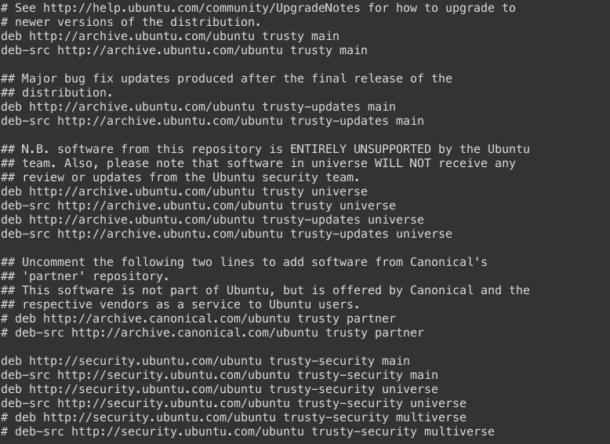
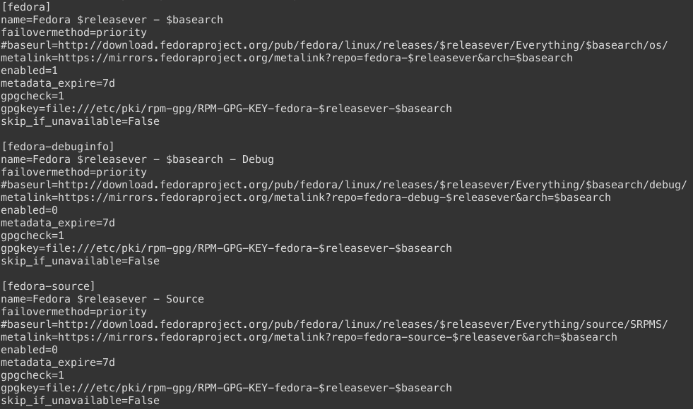

name: dark layout: true class: center, dark --- #Gestione del Software ##Installazione e gestione repository <br/> ###Niccolò Izzo ```html izzo.niccolo@gmail.com ``` <br/><br/><br/> ###<img src="img/newlogo.png" alt="POuL Logo" style="height: 4em; margin-top: 1em"> --- #Benvenuti <br/><br/><br/><br/><br/><br/> ###Qui trovate queste slide ```html software.izzo.ovh ``` <br/><br/><br/><br/><br/><br/><br/> ##Fate tante domande! --- name:sign layout:true class:dark .sign[.left[Niccolò Izzo]] .course-right[Corsi Linux Avanzati 2015 - [POuL](https://poul.org)] --- name:argomenti .title[##Oggi vedremo come] <br/><br/> -- .middle[.text[#Installare il Software]] -- <br/><br/><br/><br/> .text[#Gestire i repository] --- .title[##Compilazione] <br/> -- ###Pro - ####Codice ottimizzato e personalizzato - ####Possibile il controllo sui sorgenti </ul><br/> -- ###Contro - ####Lenta per software complessi - ####Non tiene traccia del software <br/> -- .dark[###Anche se in alcuni casi è l'unica possibilità.] --- .title[##I pacchetti precompilati] <br/> -- .dark[ ###Principalmente sono due: - ####.rpm per RHEL, Fedora e le loro derivate - ####.deb per Debian, Ubuntu e le loro derivate ] <br/> -- .dark[ ###Ma esistono anche - ####.tgz per Slackware - ####.pkg.tar.xz per Arch Linux ] --- .title[##Le operazioni base] <br/><br/> .center[##Per installare un pacchetto <br/> Debian based ] ```html # dpkg -i pacchetto.deb ``` <br/><br/> .center[RPM based] ```html # rpm -i pacchetto.rpm ``` --- .title[##Le operazioni base] <br/><br/> .center[##Per rimuovere un pacchetto <br/> Debian based ] ```html # dpkg -r pacchetto.deb ``` <br/><br/> .center[RPM based] ```html # rpm -r pacchetto.rpm ``` --- .title[##Manca ancora qualcosa...] <br/><br/> -- .dark[ ###Ora l'installazione non richiede la compilazione, ###i programmi installati sono facilmente rimovibili ] <br/><br/> -- .dark[ - ###Le dipendenze vanno soddisfatte manualmente - ###I binari sono specifici per ogni architettura - ###Non esistono aggiornamenti automatici ] --- .title[##I Package Manager] <br/><br/> .dark[ ###Apt e Aptitude per gestire i .deb ###Yum per gestire i pacchetti .rpm <br/> - ###Contengono moltissimi software utili - ###Il software è verificato (da chi gestisce i repo) - ###Le dipendenze vengono soddisfatte autonomamente - ###Gli aggiornamenti sono automatici e rapidi ] --- .title[##I Repository] <br/><br/> .dark[ ###Archivi web in cui sono raggruppati i software installabili ###Ogni distribuzione ha i suoi e ne esistono di non ufficiali ] <br/> .dark.center[ ###Ubuntu ~ 46000 pacchetti ###OpenSuse ~ 40000 pacchetti ###Debian ~ 37000 pacchetti ###Fedora ~ 40000 pacchetti ] --- .title[##Apt] <br/><br/> .dark[ ###Advanced Packaging Tool <br/><br/><br/> ###Incluso nelle distribuzioni Debian based (Ubuntu, Mint) ###Si può usare anche Aptitude: ha l'interfaccia grafica! ] --- class:center .title[##Apt - Comandi base] <br/> ###Per prima cosa aggiorniamo il database dei pacchetti ```html $ apt-get update ``` <br/> ###Ricerca nel database ```html $ apt-cache search keyword ``` <br/> ###Installazione di un pacchetto ```html # apt-get install pacchetto ``` <br/> ###Rimozione di un pacchetto ```html # apt-get remove pacchetto ``` --- class:center .title[##Apt - Aggiornamento] <br/><br/> ###Aggiornamento semplice dei pacchetti installati ```html # apt-get upgrade ``` <br/> ###Aggiornamento completo dei pacchetti installati ```html # apt-get dist-upgrade ``` <br/><br/><br/> .dark[ ###Il secondo comando aggiorna anche se sono necessarie ###modifiche alle relazioni tra i pacchetti installati ] --- class:center .title[##Apt - Altri comandi] <br/> ###Più informazioni su un pacchetto ```html $ apt-cache show pacchetto ``` <br/> ###Pulisce tutta la cache contenuta in /var ```html # apt-get clean ``` <br/> ###Rimuove un pacchetto e i suoi file di configurazione ```html # apt-get purge pacchetto ``` <br/> ###Elimina i pacchetti non più necessari al sistema ```html # apt-get autoremove ``` --- class:center .title[##Apt - Repository] ###/etc/apt/sources.list ### --- class:center .title[##Apt - Repository] <br/> ###Per aggiungere altre repository (di launchpad) ```html # add-apt-repository ppa:utente/nome-ppa ``` <br/><br/><br/> ###Altrimenti possiamo modificare a mano il file sources.list ###ricordandoci di aggiungere le relative chiavi GPG. ###É presente un'ottima guida sulla [wiki di Ubuntu.](http://wiki.ubuntu-it.org/Repository/RigaDiComando) ###Aggiorniamo sempre il database dei pacchetti ###dopo ogni modifica ai repository. --- .title[##Apt - Demo] <br/><br/><br/><br/><br/><br/> .center[#DEMO!] --- .title[##YUM] <br/><br/> .dark[ ###Yellow dog Updater, Modified <br/><br/> ###E' il package manager per le distribuzioni basate su rpm ###si trova incluso di default in Fedora, RHEL, CentOS ###A differenza di apt, aggiorna da solo il suo DB dei pacchetti ] --- class:center .title[##YUM - Comandi base] <br/> ###Installazione di un pacchetto ```html # yum install pacchetto ``` <br/> ###Ricerca nel database dei pacchetti ```html $ yum search keyword ``` <br/> ###Rimozione di un pacchetto (come apt-get purge) ```html # yum remove pacchetto ``` <br/> ###Più informazioni su un pacchetto ```html $ yum info pacchetto ``` --- class:center .title[##YUM - Aggiornamento] <br/><br/><br/> ###Aggiornamento semplice dei pacchetti installati ```html # yum update ``` <br/> ###Aggiornamento completo dei pacchetti installati ```html # yum distro-sync ``` <br/> ###Pulizia della cache pacchetti ```html $ yum clean packages ``` --- class:center .title[##YUM - Repository] ###/etc/yum/repos.d/fedora.repo ### --- class:center .title[##YUM - Repository] <br/> ###Per aggiungere il file .repo da web ```html # yum-config-manager --add-repo url_repository ``` <br/> ###Quindi verifichiamo i repository presenti nel sistema ```html $ yum repolist all ``` <br/> ###Abilitiamo il repository appena inserito ```html # yum-config-manager --enable nome_repository ``` <br/> ###Per disabilitarlo...banalmente ```html # yum-config-manager --disable nome_repository ``` --- .title[##YUM - Demo] <br/><br/><br/><br/><br/><br/> .center[#DEMO!] <!-- Uhm, potrei approfondire molto le repo esterne tipo RPMfusion etc. --> <!-- O ancora meglio spiegare come fare nel caso medio per GitHub. --> <!-- Createrepo? -->